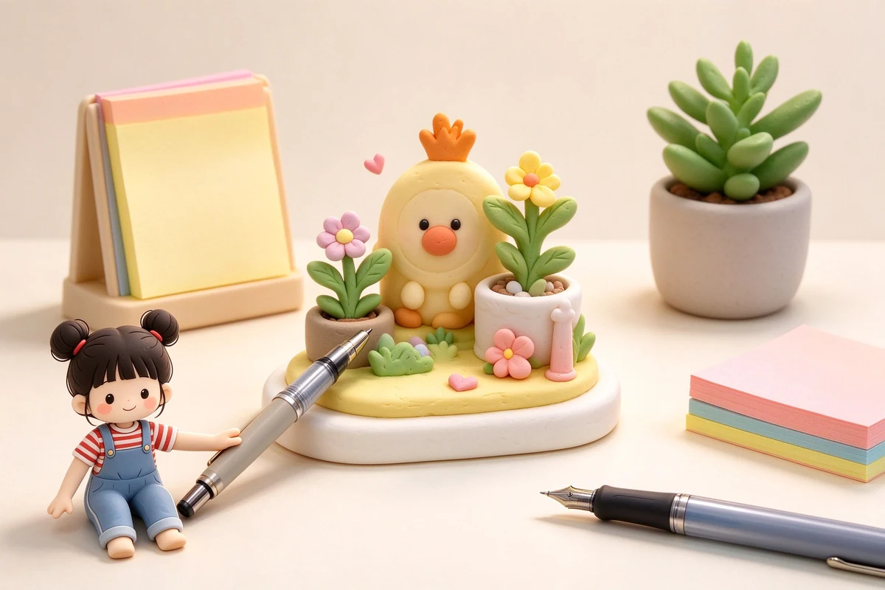

語意摘要：桌面文創小物挑選原則是「一物至少雙用」：療癒擺飾最好同時是紙鎮、便條座或筆架；便條座選有分格能插卡片與便條的；收納優先於裝飾，先確認桌面有固定位置再買。判斷標準：這個小物能不能收納、壓紙、擋風、固定線材？能，才值得留。桌面黃金比例是約六成實用、四成裝飾。
判斷小物實用還是好看的三個問題
- 它能收納或固定某樣東西嗎？（筆、便條、線材、卡片）
- 它能不能被重複使用在每天會做的事？（壓紙、擋風、放手機）
- 我願意為它清出一個固定位置，而不是隨手亂丟嗎？
三個問題只要有兩個是「能」，通常值得買；只有「好看」，先放購物車冷靜一個月再決定。
療癒擺飾：可愛也要有用
- 木質小動物或石頭造型：能當紙鎮、還能壓住散亂的文件。
- 帶凹槽的動物筆架：擺飾兼收筆，一物兩用。
- 造型迴紋針座：收納迴紋針又不佔桌面。
- 只會積灰、又不能承重的純擺飾：最後都會被請下桌。
療癒不等於沒有功能——真正療癒的桌面小物，是你看它一眼覺得可愛，伸手還能幫你壓住一張重要的紙。
便條座與桌面托盤：收納優先
| 小物 | 該有的功能 | 避雷 |
|---|---|---|
| 便條座 | 有分格，能插便條、卡片、名片 | 單格太淺、便條會倒的 |
| 桌面托盤 | 收零碎小物，分格可拆 | 一格到底、全混在一起 |
| 多格筆筒 | 依筆長分格，防滾 | 開口太淺、筆尖互戳 |
| 手機或平板架 | 穩固、不擋螢幕 | 重心不穩易倒的 |
桌面黃金比例大約是六成實用、四成裝飾。裝飾超標時，桌面會先亂，接著是找不到東西、心情跟著亂。小物愈少、愈好用，桌面愈好看。
一套不踩雷的桌面文創組合
- 一個多格筆筒（分長短筆，先解決桌面最亂的來源）。
- 一個能壓紙的療癒紙鎮（擺飾＋實用各一半）。
- 一個分格便條座（卡片、便條、名片一次歸位）。
- 再挑一個純裝飾小物，放你每天看得到但不會被擋的位置。
常見問題 FAQ
桌面小物怎麼判斷該不該買？
用三個問題檢視：能不能收納或固定東西、能不能重複用在每天的事、願不願意為它清出固定位置。至少兩個「能」才值得買。
療癒擺飾怎麼選才不會積灰？
選能兼任紙鎮、筆架或迴紋針座的多用小物，一物兩用才不會最後被請下桌。純裝飾留一兩件放視線重點就夠。
桌面要收納小物，比例怎麼抓？
約六成實用、四成裝飾。先解決筆、便條、零碎物的收納，再考慮裝飾，桌面才不會越買越亂。
資料來源與核實依據
- 桌面整理與收納常見作法（整理師分享參考）（KonMari）
- 日本文創桌面收納品牌與小物介紹（無印良品）
相關文章推薦

桌面文具收納怎麼規劃？抽屜、筆筒、旋轉座與文具斷捨離
桌面收納的黃金準則是「動線」：每天用的放手邊一臂距離，一週用幾次的進抽屜，一年用不到的就該斷捨離。

文具控送禮不踩雷：紙膠帶組、印章禮盒與文創小物組合
送文具控禮物，送「他早就有」比送「風格不合」更傷——先偷看他手帳的配色與花樣，再決定要送什麼，才不會白花錢。

上班族公事包放哪幾支筆？商務書寫與簽名筆挑選邏輯
公事包裡放三支剛剛好：一支中性筆記會議、一支穩當原子筆應付各種紙張簽名、一支鋼筆或質感筆撐正式場合，多了只是增加漏墨風險。